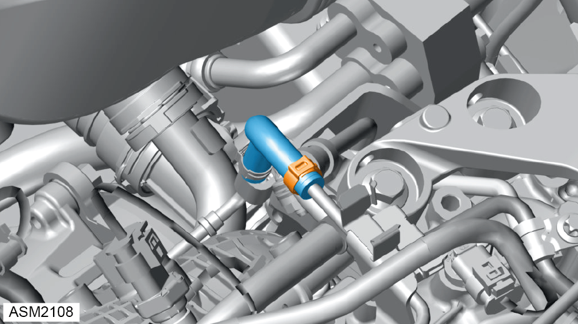

Injector Rail - Direct - 4 Cylinder
Print
Operation Code: 42.05.14-02
Important Information
 DANGER: Risk of explosion caused by fuel igniting, risk of poisoning caused by inhaling and swallowing fuel as well as risk of injury to eyes and skin caused by contact with fuel. Keep ignition sources away from work area. Use suitable and appropriately labelled containers for fuels. Wear protective clothing when handling fuel.
DANGER: Risk of explosion caused by fuel igniting, risk of poisoning caused by inhaling and swallowing fuel as well as risk of injury to eyes and skin caused by contact with fuel. Keep ignition sources away from work area. Use suitable and appropriately labelled containers for fuels. Wear protective clothing when handling fuel.
DANGER: Risk of explosion caused by fuel igniting. Risk of injury to skin and eyes caused by fuel spraying out at high pressure. Keep ignition sources away from work area. Do not carry out work on fuel system when it is pressurized.
 WARNING: Engine oil is a toxic substance and can be lethal if ingested. Wear protective gloves, protective clothing and safety glasses.
WARNING: Engine oil is a toxic substance and can be lethal if ingested. Wear protective gloves, protective clothing and safety glasses.
Removal
- Depressurise fuel system. Refer to procedure.
- Disconnect battery. Refer to procedure.
- Remove bolts (x8) securing coil packs to engine.
- Remove coil packs (x4).
- Disconnect harness connector from engine bay temperature sensor.
- Release clamps (x3) securing coolant hoses to coolant return pipes.
- Disconnect coolant hoses from coolant return pipes
NOTE: Be prepared to catch any excess fluid.
NOTE: Plug hose to prevent ingress of dirt.
- Release clip securing harness connector to coolant return pipes.

- Release clamp securing coolant hose to coolant return pipe.
- Disconnect coolant hose from coolant return pipe.
NOTE: Be prepared to catch any excess fluid.
NOTE: Plug hose to prevent ingress of dirt.
- Release engine harness from injector rail and move aside.
- Remove bolts (x3) securing coolant return pipe to engine. Torque 8 Nm.
- Remove coolant return pipes.
NOTE: Be prepared to catch any excess fluid.
NOTE: Plug hose to prevent ingress of dirt.
- Release vacuum connector from retaining clips.
- Move vacuum hose aside.
- Remove screws (x3) securing engine harness to engine. Torque 8 Nm.
- Move engine harness aside.
- Disconnect electrical connector from injector rail pressure sensor.
- Disconnect electrical connectors (x4) from fuel injectors.
- Remove bolts (x4) securing fuel injector clamps to cylinder head. Torque 22 Nm.
- Mark the position of the injectors 1 to 4 relative to the fuel rail.
NOTE: If re-using the injectors, each injector should be replaced into its original cylinder position.
- Release injector rail feed pipe union nut. Torque 22 Nm.
NOTE: Plug injector feed to prevent ingress of dirt.
NOTE: Be prepared to catch any excess fluid.
- Remove injector rail and injectors.
 CAUTION: Take care not to damage injectors and seals.
CAUTION: Take care not to damage injectors and seals.
NOTE: Plug injector holes to prevent ingress of dirt.
- Remove and discard O-rings (18 and 19).
Do not proceed further if removing for access only.
- Remove retaining clips (2) (x4) securing injectors (Y76) to injector rail (1).
- Remove injectors.
NOTE: Plug injector rail to prevent ingress of dirt.
- Remove and discard O-rings (17).
- Remove injector rail pressure sensor. Torque 38 Nm.
NOTE: Plug injector rail to prevent ingress of dirt.
Installation
- Installation is the reverse of removal procedure except for the following:
- Renew discarded O-rings.
- Apply light coating of oil to fuel injector O-rings.
CAUTION: Take care not to damage O-rings.
- Apply clean engine oil to threads and mating surfaces of fuel pressure sensor.
- Perform coding of injector to Electronic Control Module (ECM).
- Perform a diagnostic read and clear error memory using Lotus Insight tool.